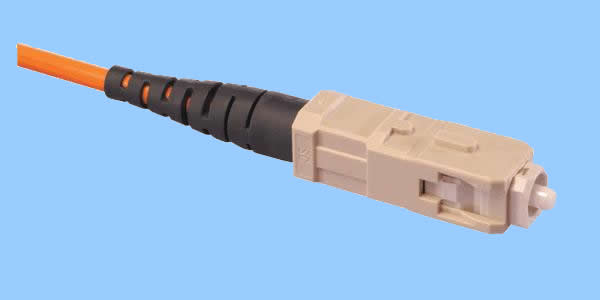

ТЕМА 3: Видове кабели и конектори.
Повечето съвременни мрежи са кабелни, като най-често използваните кабели са коаксиален, усукана двойка или оптично влакно.
Коаксиален кабел
Коаксиалният кабел би трябвало да е познат на всички, притежаващи кабелна телевизия. Сърцевината му е изградена от мед, като може да бъде или многожичен, или солиден проводник. Сигналът се предава по медта, която е увита в изолатор. Около изолатора е увит друг проводник - метално фолио или оплет-ка. Този външен проводник е разположен по цялата дължина на кабела. От тук идва и името коаксиален (coaxial), защото по цялата дължина вървят съвместно (со) два физически канала - единият за пренос на сигналите, а другият за земя -при това по една и съща ос (axis). Външният проводник играе ролята на екран срещу различните електромагнитни смущения. Всички тези компоненти накрая са увити във външна защитна обвивка от пластмаса, гума или негорим материал — например тефлон.
ЗАБЕЛЕЖКА Кабелите с негорима опаковка са задължителни за повечето сгради, в които мрежата се прокарва през пленума - пространството между окачения таван и етажната плоча над него. Това се налага, защото опаковката на стандартния коаксиален кабел е направена от поливинилхлорид (PVC), който отделя токсични газове при изгаряне.
Поради дебелата изолация и доброто екраниране, коаксиалният кабел е по-неподатлив на външни електромагнитни смущения, отколкото усуканата двойка.
Съществуват хиляди различни типове и категории коаксиални кабели, както може да се види от каталозите на всеки производител. Много от тях се използват от мрежи със специално предназначение, като например за свързване на научни инструменти или друга специализирана апаратура. В следващата таблица са посочени видовете коаксиални кабели, които се използват в компютърни мрежи:
| Обозначение | Общо наименование | Описание | Предназначение |
|---|---|---|---|
| RG-8, RG-11 | Thicknet | Дебел коаксиален кабел с диаметър половин инч | 10Base5 |
| RG-58 A/U | Thinnet | Тънък коаксиален кабел с диаметър четвърт инч | 10Base2 |
| RG-58 C/U | Thinnet (военна спец.) | Тънък коаксиален кабел с диаметър четвърт инч | 10Base2 (военни цели) |
| RG-62 | ARCnet | Тънък коаксиален кабел | ARCnet мрежи |
В ранните реализации на Ethernet, коаксиалният кабел беше най-популярният тип. Кабелът с усукана двойка обаче го измести. Коаксиалният кабел за Ethernet мрежите има две основни разновидности: тънък и дебел, които се наричат съответно thinnet и thicknet.
ЗАБЕЛЕЖКА Коаксиалният кабел, използван от кабелните телевизионни оператори, прилича много на thinnel кабела, но те не са взаимозаменяеми. Този за кабелната телевизия е RG-59 и има импеданс 75 ома.
- Тънък коаксиален кабел
 Тънкият коаксиален кабел е с диаметър приблизително една четвърт инч и е по-гъвкав, отколкото thicknet кабела. Използва се в Ethernet 10Base2 мрежи, а сигналът може да се пренася на разстояние до 185 метра, без да се влошава неговото качество.
Тънкият коаксиален кабел е с диаметър приблизително една четвърт инч и е по-гъвкав, отколкото thicknet кабела. Използва се в Ethernet 10Base2 мрежи, а сигналът може да се пренася на разстояние до 185 метра, без да се влошава неговото качество.
Тънкият коаксиален кабел се нарича RG-58. Неговият импеданс (т.е. неговото съпротивление спрямо течащия по проводника ток) е 50 ома. Коаксиалният кабел е стандартизиран за цялата индустрия чрез спецификациите RG (Registered Grade). В компютърните мрежи се използват само няколко от стотиците класификации.
10Base2 мрежите използват тънкия коаксиален кабел RG-58 A/U. Сърцевината му е многожична. RG-58/U на външен вид е подобен на RG-58 A/U, само че медната сърцевина е плътна. Тъй като импедансът му е различен, той се използва като антенен кабел, а също и за други цели.
плътна. Тъй като импедансът му е различен, той се използва като антенен кабел, а също и за други цели.
Thinnet кабелът се свързва към мрежовата карта посредством BNC Т-конектор, който се закрепва към BNC конектора на самата мрежова карта, както е показано на схемата.

- Дебел коаксиален кабел
Дебелият коаксиален кабел, наричан също thicknet, има приблизително два пъти по-голям диаметър от този на thinnet кабела - около половин инч. Thicknet беше оригиналният тип кабел, използван в ранните Ethernet мрежи.
Дебелият коаксиален кабел е тип RG-8 или RG-11. Поради по-дебелата сърцевина той може да предава сигнали на доста дълги разстояния - 500 метра - без затихване. Той обаче е по-скъп и с него се работи по-трудно, отколкото с тънката версия, защото не е толкова гъвкав и се използва външен приемопредавател. Изграждането на връзка е по-сложно, отколкото използването на BNC конектори при thinnet.

- BNC конектори
 В 10Base2 мрежите (т.е. тези с тънък коаксиален кабел) се използват BNC конектори за връзка между мрежовата карта и кабела. BNC конекторът представлява малко цилиндрично устройство с игла по средата, която се свързва с проводника в кабела. Той се захваща чрез завъртане на външен пръстен.
BNC устройствата включват:
В 10Base2 мрежите (т.е. тези с тънък коаксиален кабел) се използват BNC конектори за връзка между мрежовата карта и кабела. BNC конекторът представлява малко цилиндрично устройство с игла по средата, която се свързва с проводника в кабела. Той се захваща чрез завъртане на външен пръстен.
BNC устройствата включват:
 BNC Т-конектор - При този конектор стеблото на Т се свързва към мрежовата карта, а всеки от останалите два края се свързва към кабела. Ако към Т-конектора се свързва само един кабел, от другата му страна се поставя терминатор.
BNC Т-конектор - При този конектор стеблото на Т се свързва към мрежовата карта, а всеки от останалите два края се свързва към кабела. Ако към Т-конектора се свързва само един кабел, от другата му страна се поставя терминатор.  BNC цилиндричен конектор - Този конектор представлява прав цилиндър, към който се свързва краят на кабела, така че можете да съедините две парчета кабел, за да увеличите общата дължина.
BNC цилиндричен конектор - Този конектор представлява прав цилиндър, към който се свързва краят на кабела, така че можете да съедините две парчета кабел, за да увеличите общата дължина.
Използването на цилиндрични конектори трябва да е минимално, защото във всяка точка на свързване може да възниква загуба на сигнала. BNC терминаторът представлява 50-омово устройство за терминиране, което се инсталира във всеки от краищата на коаксиалната шина. Терминаторът предотвратява отразяването на сигнала при достигането му до края на кабела, което иначе предизвиква смущение. И двата края на кабела трябва да са терминирани, а единият от тях е необходимо да е заземен с помощта на проводник към нулев електрически потенциал.
BNC терминаторът представлява 50-омово устройство за терминиране, което се инсталира във всеки от краищата на коаксиалната шина. Терминаторът предотвратява отразяването на сигнала при достигането му до края на кабела, което иначе предизвиква смущение. И двата края на кабела трябва да са терминирани, а единият от тях е необходимо да е заземен с помощта на проводник към нулев електрически потенциал.

Кабел тип усукана двойка
В днешно време, когато повечето хора споменават термина Ethernet кабел, те имат предвид кабела тип усукана двойка, използван в повечето съвременни Ethernet мрежи. Той се нарича усукана двойка, защото под външната опаковка са скрити усукани по двойки изолирани медни проводници, като по този начин се предотвратяват паразитните кръстосани шумове (т.е. влиянието на сигнала от единия проводник върху сигнала, предаван по другия). Колкото по-голям е броят на усукванията за единица разстояние, толкова по-добра е степента на защита срещу кръстосаните шумове.
Кабелът тип усукана двойка е наличен в два основни типа: неекранирана усукана двойка (unshielded twisted-pair - UTP) и екранирана усукана двойка (shielded twisted-pair - STP ), както е показано на фигурата.  Телефонните комуникации и повечето Ethernet мрежи използват UTP. STP се използва в Token Ring и AppleTalk мрежи.
Телефонните комуникации и повечето Ethernet мрежи използват UTP. STP се използва в Token Ring и AppleTalk мрежи.
Когато към усуканата двойка се добави екраниране, то намалява влиянието на външните електромагнитни смущения. Това обаче увеличава затихването и може да повлияе върху съпротивлението на проводника, предизвиквайки загуба на данни.
- UTP кабел
UTP е много популярен тип кабел за LAN мрежи поради няколко причини:
- Относително евтин
- Гъвкав е и с него се работи лесно
- Използва популярните RJ-45 конектори, които изглеждат и действат като по-малките RJ-11 конектори (популярни в България като евро-жакове), използвани от телефонните апарати.
- Използва се в звездна топология, предоставяща преимуществата, дискутирани раздел II - „Категоризиране на мрежите".
UTP кабелите са разделени на категории в зависимост от тяхното приложение и скоростта на пренасяне на данните. В следващата таблица са изброени UTP категориите, като е дадено тяхното приложение и скоростта на пренос.
UTP категория |
Максимална скорост на предаване |
Характеристики и предназначение |
Cat 1 |
1 Mbps |
Само за глас Използва се в стари телефонни инсталации |
Cat 2 |
4 Mbps |
He се препоръчва за предаване на данни |
Cat 3 |
16 Mbps |
Най-ниската категория за предаване на данни; използва се най-вече за телефонно окабеляване |
Cat 4 |
20 Mbps |
Подходящ за изграждане на мрежи 10 Mbps Ethernet |
Cat 5 |
100 Mbps - 1 Gbps |
Най-популярната категория за изграждане на локални мрежи. Използва се за Fast Ethernet (100 Mbps) |
Cat 5 Enhanced (Cat 5e) |
155 Mbps |
Използва се за Fast Ethernet и Asynchronous Transfer Mode (ATM) със скорост 155 Mbps |
Cat 6 & 7 |
1 Gbps и нагоре |
Използва се за новите технологии Gigabit Ethernet |
ЗАБЕЛЕЖКА: UTP стои в основата на телефонните връзки, които са положени в стените на сградите; кабелите завършват с розетки, в които се включват RJ-11 конектори (жакове). Най-често кабелът от розетката до телефонния апарат е праволинейна двойка медни проводници и се нарича „сребърен атлаз" поради лъскавия му сив цвят. Подобно на коаксиалния кабел, UTP има две разновидности - стандартна и огнеупорна (за пленум).
- Екранирани кабели тип усукана двойка (STP, FTP и SFTP).
Екранирането се реализира чрез медна оплетка (STP - Shielded Twisted-Pair) или фолио (FTP - Foiled Twisted-Pair), обвити около изолираните медни двойки вътре в най-външната опаковка. Предлага се и вариант, при който екранирането е реализирано едновременно с фолио и метална оплетка - SFTP (Shielded Foiled Twisted-Pair). Екранирането намалява въздействието на електромагнитните смущения, но пък оскъпява кабела (най- вече това важи за STP, a в най-малка - за FTP) в сравнение с UTP версията и създава други проблеми.
Когато към усуканата двойка се добави екраниране, то намалява влиянието на външните електромагнитни смущения. Това обаче увеличава затихването и може да повлияе върху съпротивлението на проводника, предизвиквайки загуба на данни.
- RJ конектори
RJ (registered jack - регистриран жак) конекторите се наричат така, защото са  регистрирани от Федералната комисия по комуникациите (Federal Communications Commission - FCC) на САЩ. RJ конекторите се състоят от мъжки и женски жак.
регистрирани от Федералната комисия по комуникациите (Federal Communications Commission - FCC) на САЩ. RJ конекторите се състоят от мъжки и женски жак.
Обикновените аналогови телефонни линии по принцип използват RJ-11 конектори. Това са модулни букси, свързани към познатия плосък телефонен кабел, който свързва розетката на стената с телефонния апарат. Вътре в стената розетката се свързва към UTP кабел (обикновено Cat 3 или 5 в модерните сгради). Модемите разполагат с RJ-11 конектори.
RJ-45 конекторите се използват при UTP кабела, предназначен за Ethernet мрежи. Мъжкият и женският RJ-45 конектор изглеждат като RJ-11, но са малко по-големи. Двойките кабели се закрепват към RJ буксата с помощта на специален инструмент, наречен кримпер.
Съществуват огромен брой RJ обозначения, но RJ-11 и RJ-45 са тези, които се срещат най-често при компютърните мрежи.

Влакнесто-оптичен кабел
Влакнесто-оптичният кабел (наричан също оптично влакно, оптичен кабел, или само влакно) е по-нова и по-бърза, но и сравнително скъпа преносна среда, набираща все по-голяма популярност с нарастването на популярността на високоскоростните приложения. Той може да работи и със скорост 1 Gbps и повече.
ЗАБЕЛЕЖКА: Lucent Technologies са документирали скорост на предаване на данни от порядъка на над 3 терабита в секунда в лабораторни условия, използвайки множество лазери в комбинация с оптично влакно. Един терабит се равнява на един трилион бита (1000 Gbps).
 Вместо мед, влакнесто-оптичният кабел използва тънки нишки стъкло или пластмаса, по които сигналът се предава под формата на светлинни импулси. Освен скоростта, оптичният кабел има още няколко преимущества:
Вместо мед, влакнесто-оптичният кабел използва тънки нишки стъкло или пластмаса, по които сигналът се предава под формата на светлинни импулси. Освен скоростта, оптичният кабел има още няколко преимущества:
- Той е по-сигурен от коаксиалния кабел и усуканата двойка, тъй като няма електрически сигнал, който да може да бъде прихванат.
- По-устойчив е на затихване спрямо останалите видове кабели, поради което може да се разполага на големи разстояния - 2000 метра и повече.
- Неподатлив е на външни електрически смущения като електромагнитни и радиочестотни излъчвания.
В сравнение с останалите типове кабели оптичният е доста по-скъп. Освен самата му себестойност, най-големите разходи по използването му са свързани с човешкия труд; с оптичен кабел се работи много по-трудно, а за снаждането на мъничките нишки от стъкло или пластмаса се изискват специално обучени техници.
- Режими на работа на оптичните кабели
Влакнесто-оптичният кабел работи в един от следните два режима:
- Единичен режим (Single mode) - Единичният режим се нарича също аксиален, защото светлината пътува по оста на кабела.
- Множествен режим (Multimode) - При множествения режим светлин ните вълни навлизат в стъкления канал под различни ъгли и пътуват неаксиално, което ще рече, че те непрекъснато се отразяват и отскачат от стените на стъклената тръба.
Еднорежимният оптичен кабел е по-бърз от многорежимния (до 10 Gbps) поради дисперсията (разпръскването или разделянето на светлинните вълни) в множествения режим, дължаща се на това, че в края на кабела светлинните импулси пристигат в различно време. Единичният режим се използва най-вече във WAN мрежите (например връзките между централите на телефонните компании). Множественият режим се използва в LAN мрежите.
- Светлинни източници за влакнесто-оптични кабели
Влакнесто-оптичният кабел може да се категоризира по типа на използвания светлинен източник:
- Светодиод (light emitting diode - LED) - Светодиодът се използва най-често при еднорежимното оптично влакно. Той е относително слаб.
- Инжекционен лазерен диод (injection laser diode - ILD) - Инжекцион ният лазерен диод излъчва силен, интензивен и точно фокусиран светлинен лъч. Използва се най-вече при многорежимното оптично влакно, което спомага за неутрализирането на по-ниската производителност на множествения режим.
- Конектори за оптични влакна
Конекторите за оптични кабели са най-трудни за инсталиране, защото всяка отделна нишка стъкло или пластмаса трябва да се подравни прецизно. След като се подравнят, кабелът се свързва към конектора с нагорещено лепило, епоксидна смола или анаеробно лепило.
Често използваните конектори за оптични влакна включват:
- SC - Действа чрез натискане и дърпане
- ST - байонетен тип
- FC - Със заключване на нишките
- SMA - Нишков тип
- FSD - Устройство с фиксирана опаковка, използвано при FDDI